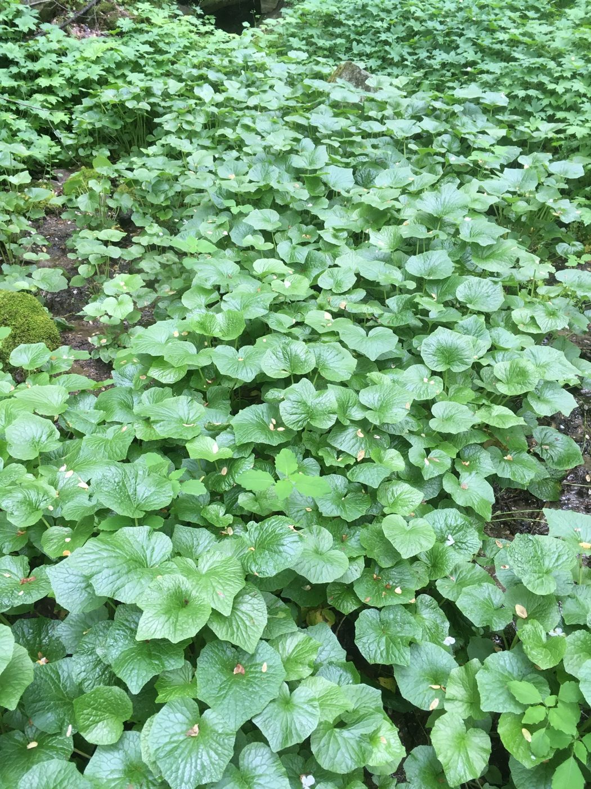
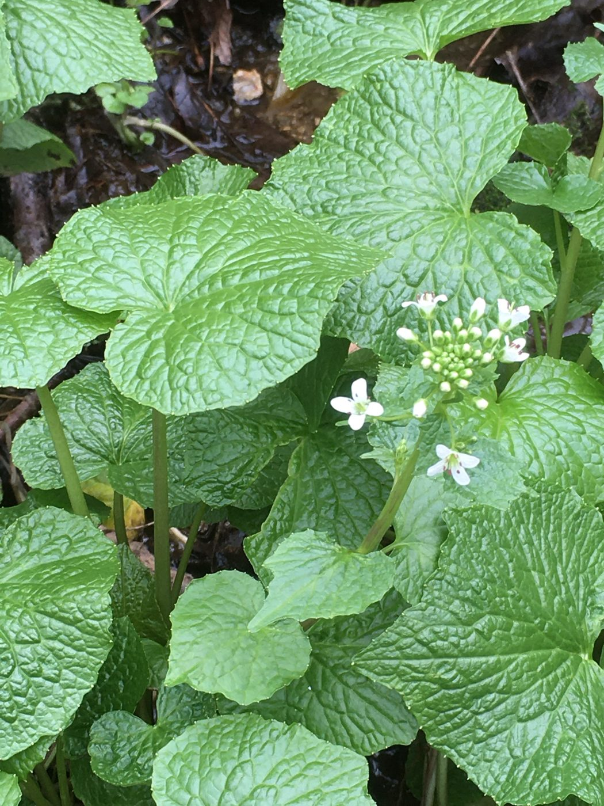

Cultivating and offering authentic wasabi grown right here in Appalachia.
Real wasabi, grown in the cool, shaded, spring-fed mountains of Appalachia.
Explore the farm
- About Us The farm, the growers, and why we chose Appalachia.
- About Wasabi What real wasabi is, how it grows, and how to enjoy it.
- Shop Shop our wasabi, shipped to your door.
- Collaboration Chefs, restaurants, and fellow growers: let's work together.
- Contact Us Questions, orders, or just to say hello.
From our grow site
Cool shade, moving water, and patience.
Wasabi is one of the most demanding crops there is, and it takes around two years to reach harvest size. These photos are from our own patch.
Learn how it grows


